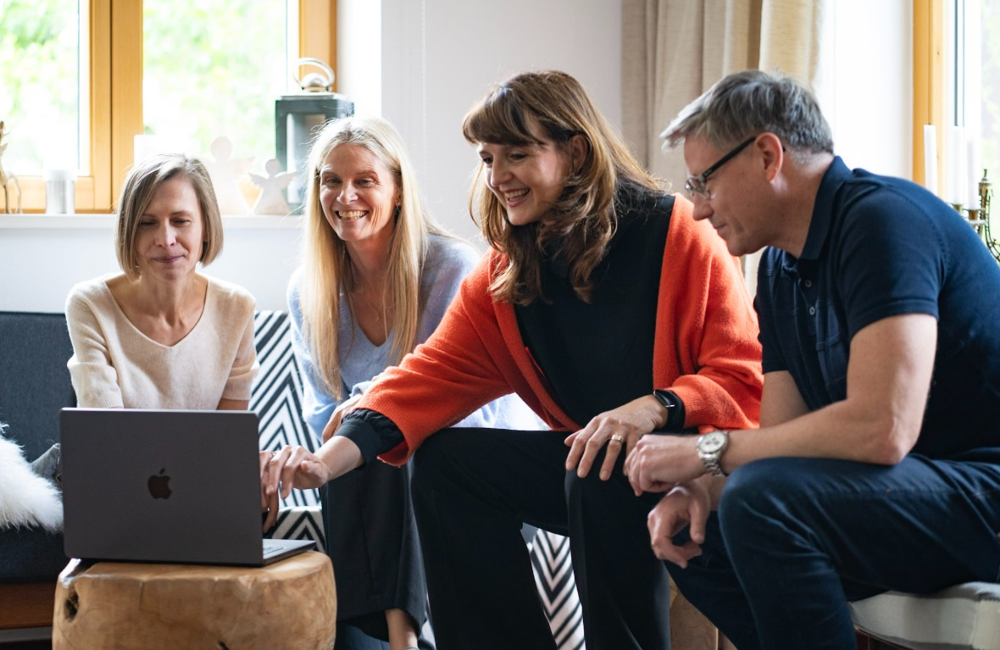
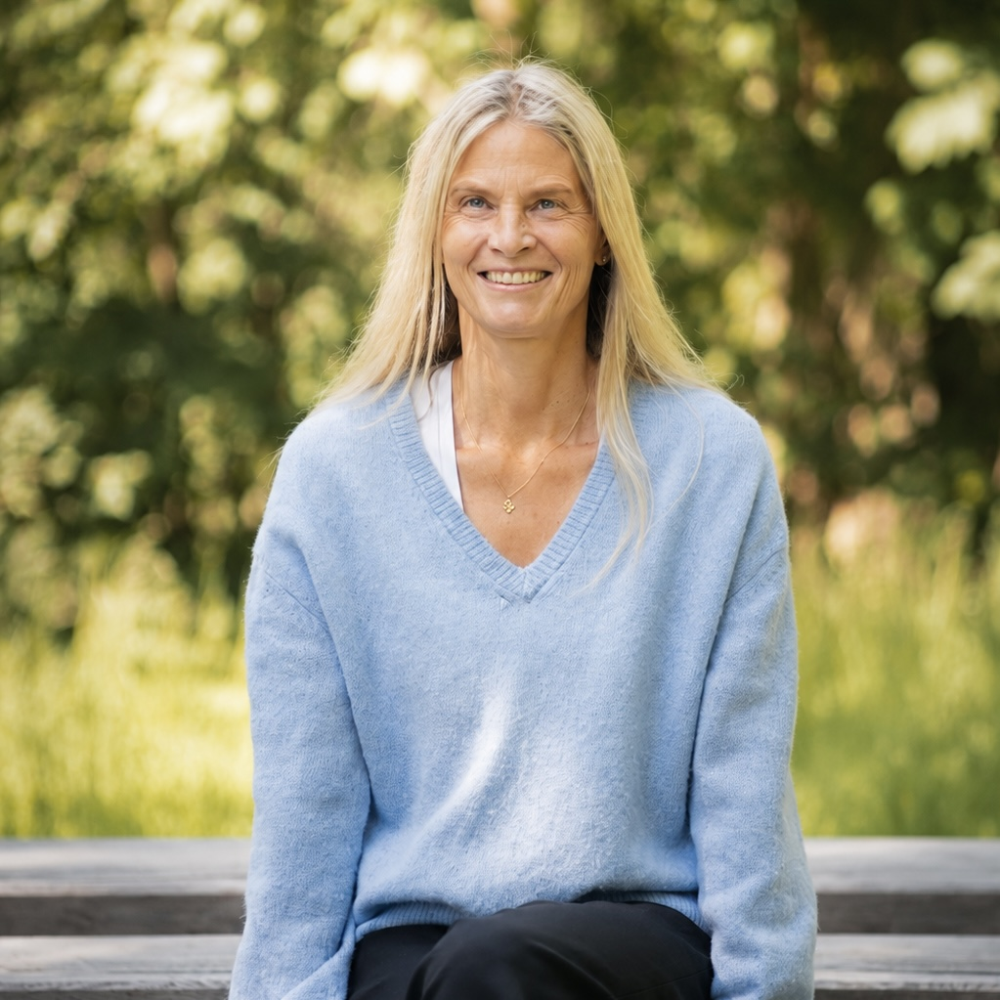
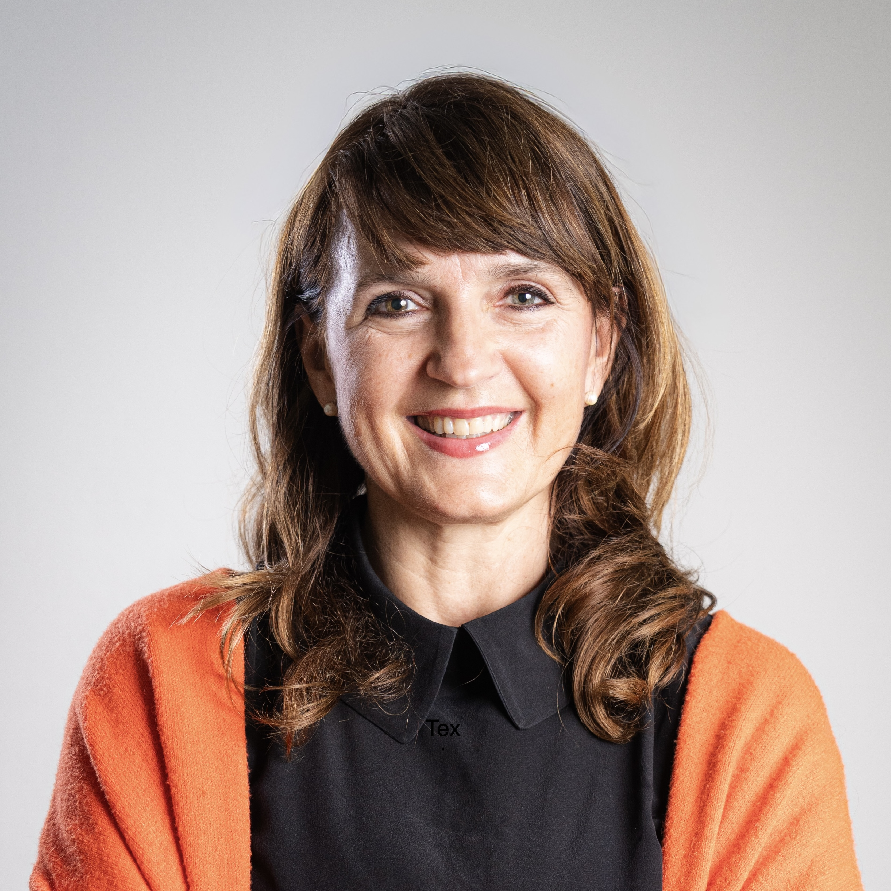
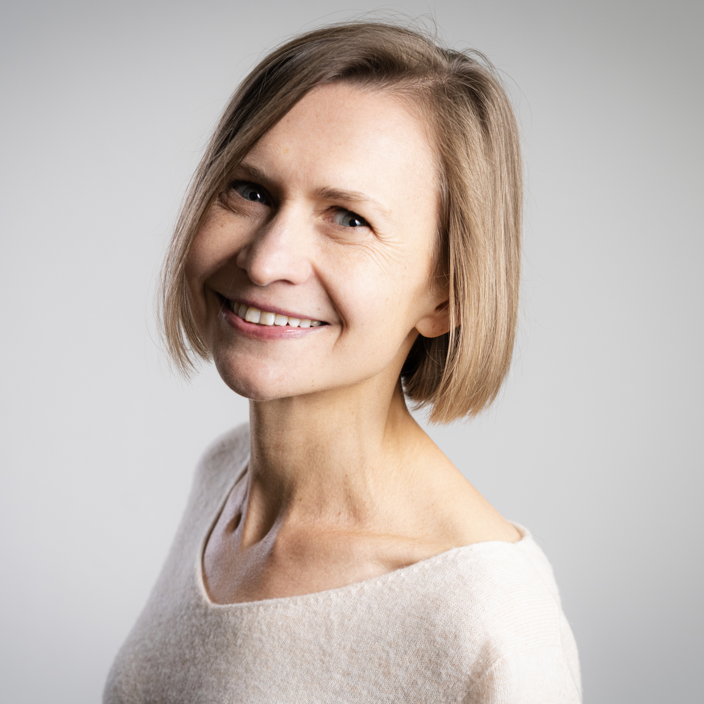
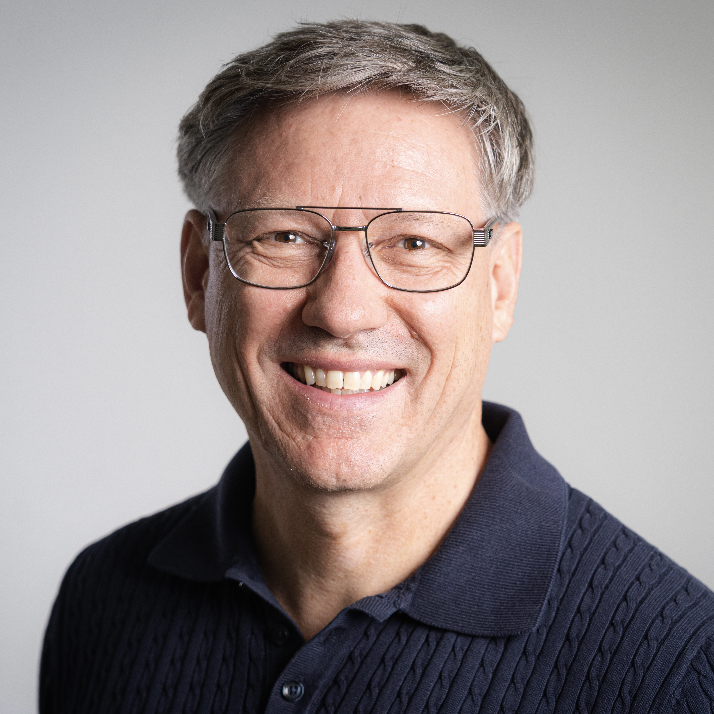

Wir bringen über 80 Jahre kombinierte Führungserfahrung aus Pharma, R&D, Marketing und Produktion zusammen — und dieselbe Überzeugung: Veränderung gelingt, wenn Menschen wachsen dürfen.We bring more than 80 years of combined leadership experience from pharma, R&D, marketing and manufacturing — and the same conviction: change succeeds when people are allowed to grow.
Wir haben als Coaches für Dynamic Shared Ownership Führungsteams, Customer Teams und Produktionsteams bei Bayer durch tiefe Veränderungsprozesse begleitet. Diese Erfahrung — was funktioniert, was scheitert, was Menschen wirklich trägt — bringen wir in jedes Mandat ein.As Coaches for Dynamic Shared Ownership, we have guided leadership teams, customer teams and production teams at Bayer through deep transformation processes. We bring this experience — what works, what fails, what truly carries people — into every engagement.


Founder & Managing Director
Transformations-Coach · IOBC-zertifiziert · PharmazeutinTransformation Coach · IOBC Certified · Pharmacist
Anja steht für Transformation, die von innen heraus wirkt. Mit über 20 Jahren Führungserfahrung in der pharmazeutischen Industrie kennt sie Veränderung als strategischen Prozess und persönliche Entwicklungsreise. Als Coach für Dynamic Shared Ownership begleitet sie Senior-Führungsteams durch anspruchsvolle Transformationen. Ihr Fokus: Klarheit, Selbstführung und mutige Authentizität — als Grundlage für lebendigere und erfüllendere Arbeitsplätze.Anja stands for transformation that works from the inside out. With over 20 years of leadership experience in the pharmaceutical industry, she understands change as both a strategic process and a personal development journey. As a Coach for Dynamic Shared Ownership, she supports senior leadership teams through demanding transformations. Her focus: clarity, self-leadership and courageous authenticity — as the foundation for more vibrant and fulfilling workplaces.

Founder & Managing Director
Transformations-Coach · ICF-zertifiziert · PharmazeutinTransformation Coach · ICF Certified · Pharmacist
Karin verbindet strategische Breite mit einem feinen Gespür für Menschen, Teams und Kultur. In über 30 Jahren in globalen Rollen in Marketing, HR und Customer Excellence hat sie Transformation aus unterschiedlichen Perspektiven gestaltet. Als Coach für Dynamic Shared Ownership begleitet sie Führungs-, Customer- und Produktteams. Ihre Arbeit macht Kulturwandel konkret — und stärkt Vertrauen, Klarheit und geteilte Verantwortung im Alltag.Karin combines strategic breadth with a deep sensitivity for people, teams and culture. Over more than 30 years in global roles across Marketing, HR and Customer Excellence, she has shaped transformation from multiple perspectives. As a Coach for Dynamic Shared Ownership, she supports leadership, customer and product teams. Her work makes cultural change tangible — strengthening trust, clarity and shared responsibility in everyday work.

Founder & Managing Director
Transformations-Coach · IOBC-zertifiziert · KommunikationswissenschaftlerinTransformation Coach · IOBC Certified · Communication Scientist
Stefanie bringt Bewegung in Organisationen — strukturell, kommunikativ und kulturell. Mit über 20 Jahren Führungserfahrung in der Polymer- und Pharmaindustrie verbindet sie Organisationsdesign, digitales Upskilling und Kommunikation. Als Coach für Dynamic Shared Ownership begleitet sie Führungs-, Customer- und Produktionsteams. Sie arbeitet pragmatisch, agil und menschenzentriert — mit Fokus auf Zukunftskompetenzen, die Organisationen wirklich brauchen.Stefanie brings movement into organisations — structurally, communicatively and culturally. With over 20 years of leadership experience across the polymer and pharmaceutical industries, she combines organisational design, digital upskilling and communication. As a Coach for Dynamic Shared Ownership, she supports leadership, customer and production teams. She works pragmatically, agilely and with people at the centre — focusing on the future-ready skills organisations truly need.

Founder & Managing Director
Transformations-Coach · ICF-zertifiziert · ChemikerTransformation Coach · ICF Certified · Chemist
Thomas bringt Transformation in die operative Realität. Als ehemaliger Werkleiter und erfahrener Führungskräfteentwickler kennt er Produktion, Linie und Führung auf allen Ebenen. Mit über 20 Jahren Führungserfahrung weiß er, wie Eigenverantwortung systematisch ermöglicht wird. Als Coach für Dynamic Shared Ownership arbeitet er mit Senior-Führungskräften und Frontline-Teams. Seine Überzeugung: Befähigte Menschen entfalten das volle Potenzial einer Organisation.Thomas brings transformation into operational reality. As a former plant manager and experienced leadership developer, he understands production, line management and leadership at every level. With over 20 years of leadership experience, he knows how ownership can be systematically enabled. As a Coach for Dynamic Shared Ownership, he works with senior leaders and frontline teams. His conviction: empowered people unlock the full potential of an organisation.
„Eine gute Führungskraft zu werden, ist dasselbe, wie ein guter Mensch zu werden.“
“Becoming a good leader is the same as becoming a good human being.”
Transformation gelingt, wenn Menschen neue Fähigkeiten entwickeln, an echten Herausforderungen arbeiten und Verantwortung im System verankern. Vier Prinzipien prägen unsere Arbeit:Transformation succeeds when people develop new capabilities, work on real challenges, and anchor responsibility within the system. Four principles shape our work:
Nachhaltige Transformation beginnt nicht in Strukturen, sondern im Denken, Fühlen und Handeln der Menschen.Sustainable transformation doesn't start in structures, but in how people think, feel and act.
Wir liefern keine fertigen Antworten. Wir bauen die Fähigkeit auf, eigene Lösungen zu entwickeln.We don't deliver ready-made answers. We build the capacity to develop your own solutions.
Wir arbeiten an realen Herausforderungen. Erkenntnisse müssen in Entscheidungen und Verhalten ankommen.We work on real challenges. Insights have to land in decisions and behaviour.
Für größere Mandate skalieren wir über Train-the-Trainer-Formate und unser Netzwerk zertifizierter Transformations-Coaches.For larger engagements, we scale through train-the-trainer formats and our network of certified transformation coaches.
Ein 30-minütiges Gespräch — unverbindlich, ehrlich, neugierig. Wir hören zu, bevor wir vorschlagen.A 30-minute conversation — no strings attached, honest, curious. We listen before we propose.
Kontakt aufnehmenGet in Touch →